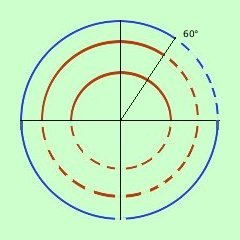

|
Risolvere la disequazione E' un'equazione di primo grado lineare non omogenea in seno e coseno; la trasformo mediante le formule parametriche. t vale tang x/2
2t porto prima dell'uguale 2t sommo i termini simili - 6t2 + 2t cambio segno , verso e divido per 2 per renderla piu' semplice 3t2 - t Scompongo t (3t - E' un prodotto: sara' maggiore di zero quando i fattori avranno segno concorde (cioe' quando entrambe i fattori sono positivi oppure sono entrambe negativi) Pongo in un sistema entrambe i fattori maggiori di zero e trovo gli intervalli dove i segni sono concordi un piccolo ripasso 3t -
 Ora cerco le soluzioni concordi della prima e della seconda disequazione: riporto all'interno i due grafici trovati Indico in blu a linea continua dove le soluzioni sono concordi, in blu a linea tratteggiata dove sono discordi Raccogliendo ho quindi le soluzioni 60° < x < 360° |